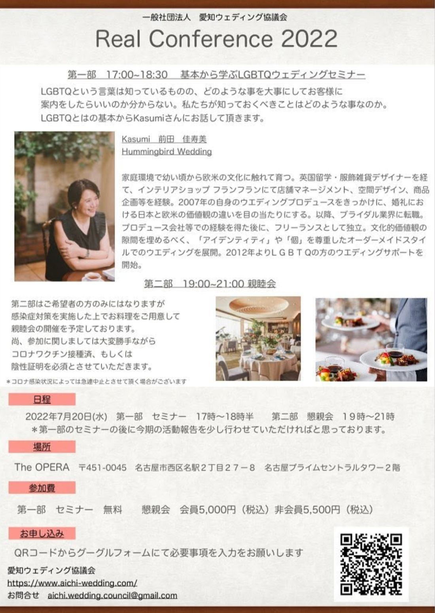

みなさん、こんばんは！全国で梅雨入りが観測され、いよいよ夏が本格的に始まりますね。体調管理を大切に、この夏もウェディング業界、乗り越えていきましょう。
そして——7月20日、愛知ウェディング協議会主催で、リアルイベントを開催することとなりました。

※ 第一部のセミナーの後に、今期の活動報告を少し行わせていただければと思っております。
LGBTQという言葉は知っているものの、どのような事を大事にしてお客様に案内をしたらいいのか分からない。私たちが知っておくべきことはどのような事なのか。LGBTQとはの基本から、Kasumiさんにお話していただきます。
多様な二人のかたちが当たり前になっていくなかで、私たちウェディングに携わる人間が、正しい知識をもってすべてのカップルをお迎えできること。それは、これからの業界にとって欠かせない基礎になっていきます。とはいえ、「大切なのは分かるけれど、何をどう学べばいいのか分からない」という方も多いのではないでしょうか。今回は、まさにその基礎から学べる内容です。
家庭環境で幼い頃から欧米の文化に触れて育つ。英国留学・服飾雑貨デザイナーを経て、インテリアショップ フランフランにて店舗マネージメント、空間デザイン、商品企画等を経験。2007年の自身のウエディングプロデュースをきっかけに、婚礼における日本と欧米の価値観の違いを目の当たりにする。以降、ブライダル業界に転職。プロデュース会社等での経験を得た後に、フリーランスとして独立。文化的価値観の隙間を埋めるべく、「アイデンティティ」や「個」を尊重したオーダーメイドスタイルでのウエディングを展開。2012年よりLGBTQの方のウエディングサポートを開始。
Instagram：@kasumi_borderless_wedding →知らないことは、時に悪気なく誰かを傷つけてしまいます。だからこそ、正しく知る。目の前のすべてのお二人に、心から寄り添える自分でいるために、ぜひご参加ください。
第二部はご希望者の方のみとなりますが、感染症対策を実施した上でお料理をご用意して、懇親会の開催を予定しております。愛知のウェディング業界でご活躍の非会員の皆さまとも、交流の場を設けたく思っております。ご参加申込をお待ちしております！！ みなさまにお会いできますこと、楽しみにしております！
ご参加に関しましては、大変勝手ながらコロナワクチン接種済、もしくは陰性証明を必須とさせていただきます。
※ コロナ感染状況によっては急遽中止とさせていただく場合がございます。
なお、ご入館に際しては、新型コロナウイルスの感染拡大予防の観点から、マスクの着用や、入館時の検温と手指の消毒へのご協力をお願いします。